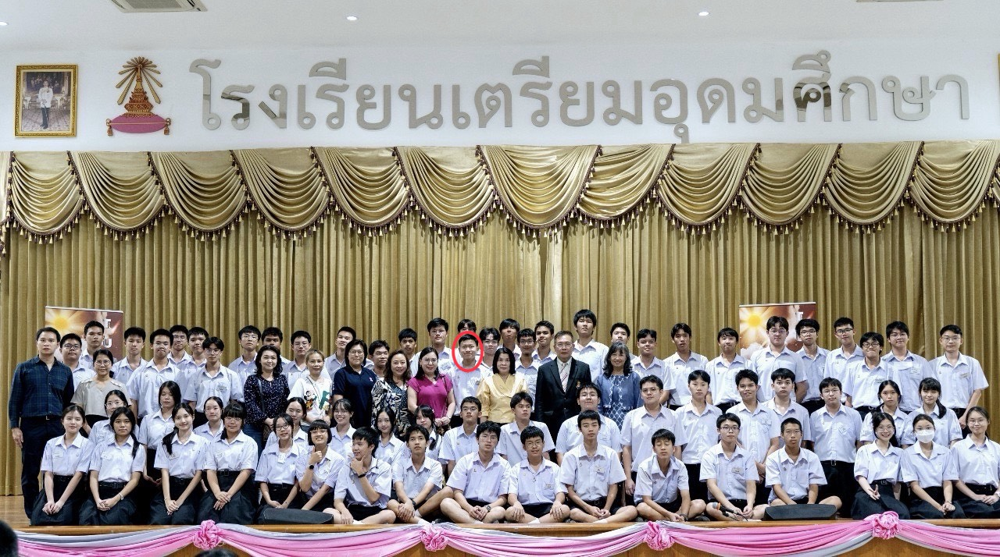
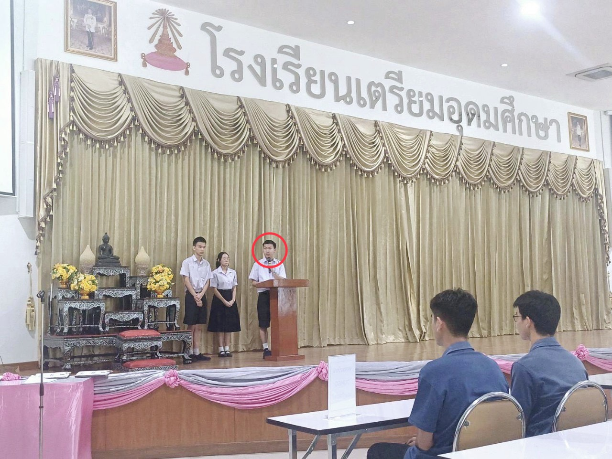
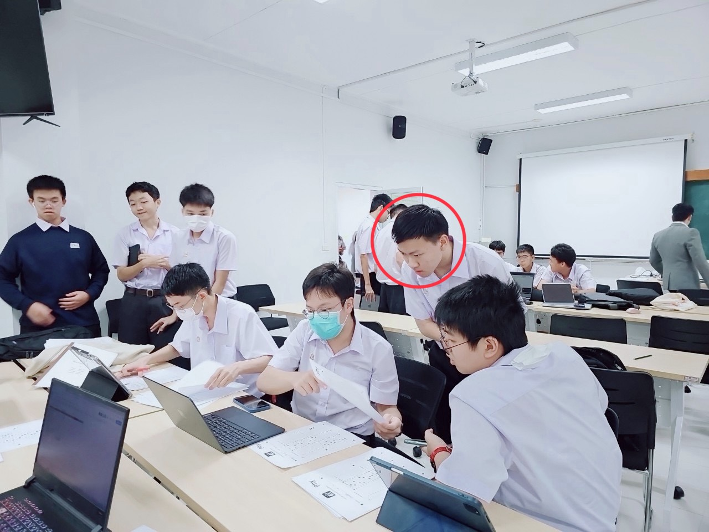
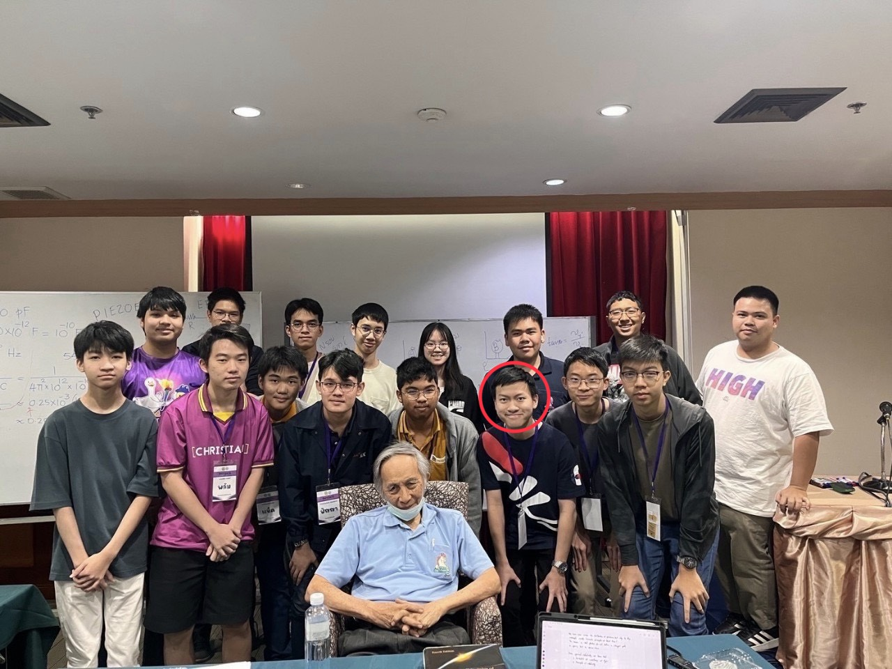
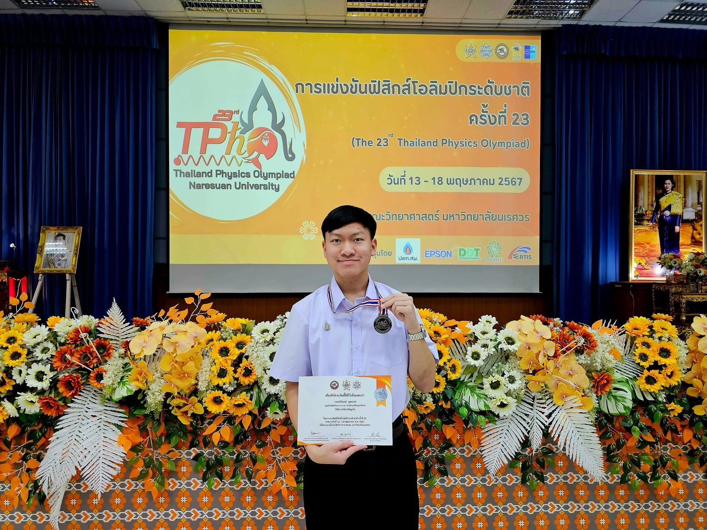
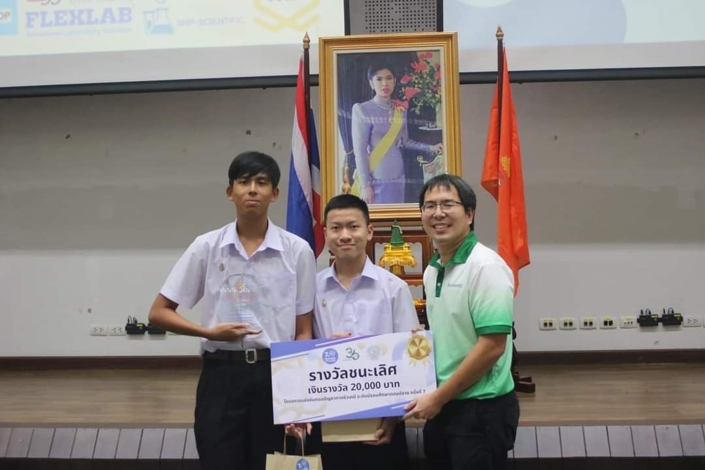
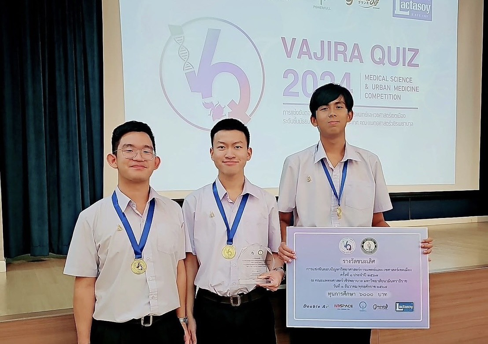
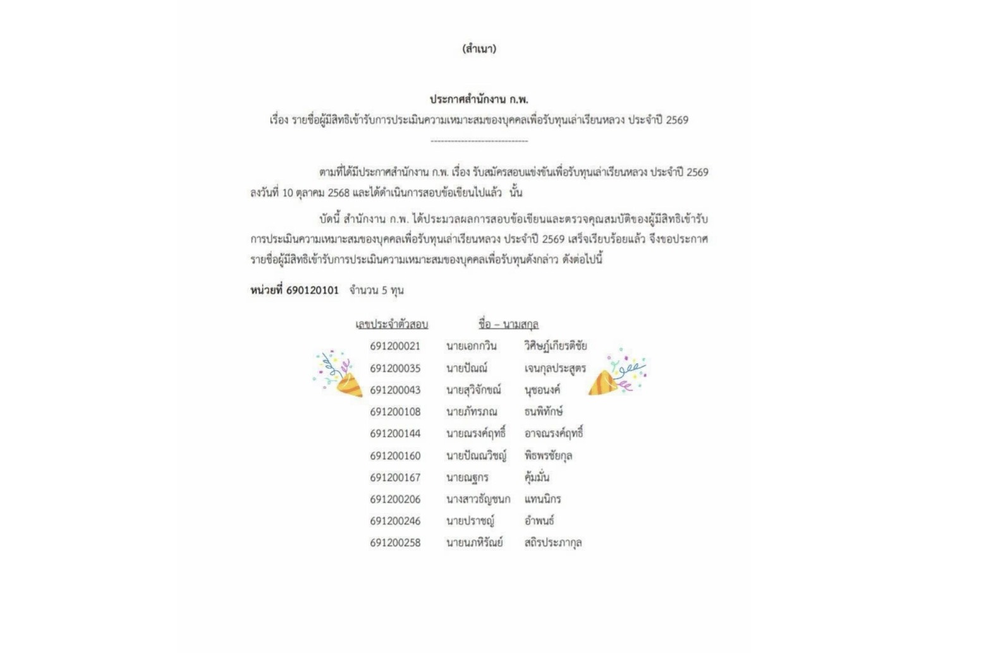
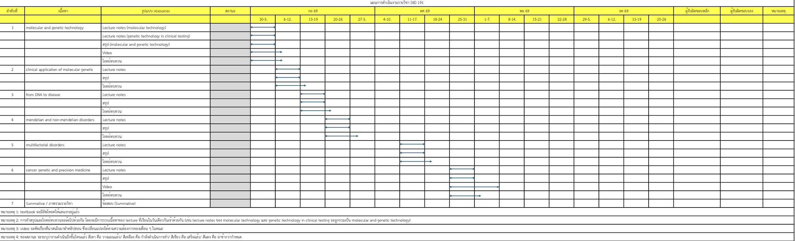

01
ประธานจัดการแข่งขัน TUGSELA ครั้งที่ 20
วางแผนภาพรวม แบ่งหน้าที่ กำหนดเวลา ติดตามงาน ประสานงาน และแก้ปัญหาเฉพาะหน้าในวันจัดงาน
HEAD OF ACADEMIC CORE TEAM
เราอาจมีเป้าหมายร่วมกัน แต่เราไม่จำเป็นต้องเดินไปถึงเป้าหมายนั้นด้วยวิธีเดียวกัน
ผมอยากสร้าง Academic ที่ไม่ได้มีเพียง Resource เพิ่มขึ้น แต่เป็นระบบที่ช่วยให้เพื่อนแต่ละคนวางแผน เลือกวิธีเรียน และไปถึงเป้าหมายของตัวเองได้ในแบบที่เหมาะกับตัวเอง
ผู้สมัคร Head of Academic Core Team
“ผมอยากให้ Academic เป็นระบบที่ช่วยให้ทุกคนไปถึงเป้าหมายเดียวกันในแบบของตัวเอง”
ผมเชื่อว่าเป้าหมายพวกเราน่าจะคล้ายกัน คือ อยากให้ 6 ปีที่ศิริราช เป็น 6 ปีที่มีความสุขและมีความหมาย แต่ความสุขของคนเราก็นิยามต่างกันไป
บางคนมีความสุขกับการทำกิจกรรมและใช้เวลากับเพื่อน บางคนมีความสุขเมื่อทำข้อสอบได้ตามเป้า และบางคนมีความสุขจากการได้เข้าใจสิ่งที่ตัวเองสนใจอย่างลึกซึ้ง
เป้าหมายร่วมกัน
แต่เส้นทางไม่จำเป็นต้องเหมือนกัน
ผมไม่ได้มองประสบการณ์เหล่านี้เป็นเพียงตำแหน่ง แต่เป็นทั้งบทเรียนเรื่องการบริหารคน ระบบ และการเรียนรู้

วางแผนภาพรวม แบ่งหน้าที่ กำหนดเวลา ติดตามงาน ประสานงาน และแก้ปัญหาเฉพาะหน้าในวันจัดงาน

นำประสบการณ์จากงานเดิมมาปรับระบบการทำงาน การจัดสอบ และการบริหารเวลาให้เป็นระบบมากขึ้น

วางแผนการถ่ายทอดความรู้ ประสานงานสมาชิกหลายฝ่าย และออกแบบเนื้อหาให้เหมาะกับผู้เรียน

ประสบการณ์การเรียนรู้และฝึกคิดเชิงลึกทางฟิสิกส์

รางวัลเหรียญเงินจากการแข่งขันฟิสิกส์โอลิมปิกระดับประเทศ

ชนะเลิศการแข่งขัน Biochemistry Challenge

ชนะเลิศการแข่งขันตอบปัญหาทางการแพทย์

ผ่านเข้าสู่รอบสัมภาษณ์และติด Top 10 ของการคัดเลือก
“การทำให้งานสำเร็จไม่ได้ขึ้นอยู่กับการที่ผู้นำทำงานได้มากที่สุด แต่ขึ้นอยู่กับการทำให้สมาชิกแต่ละคนสามารถทำหน้าที่ของตัวเองได้ดีที่สุด และทำให้ทุกคนเห็นภาพเดียวกันของเป้าหมาย”
ไม่ได้ตั้งใจทำ Resource ให้เยอะที่สุด แต่ตั้งใจออกแบบระบบให้ Resource แต่ละอย่างมีหน้าที่ของมัน
แยก Action Plan ตามรายวิชา 191, 192, 193 ระบุ Resource ช่วงเวลาทำงาน deadline ผู้รับผิดชอบหลัก–รอง และมี Head ย่อยดูแลภาพรวมของแต่ละรายวิชา
ตัวอย่าง Academic Action Plan รายวิชา SIID191 บางส่วน

สรุป 3 ระดับ
1. Core Knowledge: สรุปคัดเฉพาะประเด็นสำคัญตาม learning objective ของแต่ละบทเรียน
2. Further Details: สรุปที่เพิ่มรายละเอียดเนื้อหาเข้าไปมากขึ้น
3. Deep Dive: สรุปที่ลงทุกรายละเอียดรวมถึงอาจเพิ่มเติมเนื้อหานอกเหนือบทเรียนที่น่าสนใจ
โจทย์ทบทวน 3 ระดับ
1. Knowledge: โจทย์ทบทวนที่เน้น recall ความรู้
2. Comprrehension: โจทย์ทบทวนที่ทดสอบความเข้าใจในเนื้อหา
3. Application: โจทย์ที่เน้นการประยุกต์ใช้ในทางการแพทย์
1. สรุป: มีสรุปให้เลือก 3 ระดับ
2. Lecture Notes: สไลด์ของอาจารย์ที่ผ่านการจดมาแล้ว
3. คลิปวิดีโอสอน: คลิปติวโดยฝ่ายวิชาการ อธิบายหัวข้อที่ท้าทายให้เข้าใจมากขึ้นโดยเนื้อหายังคงครบถ้วน
4. โจทย์ทบทวน: โจทย์ทบทวนที่มีให้เลือก 3 ระดับ
5. Textbook เพิ่มเติม: แนะนำ textbook ที่น่าสนใจในการศึกษาเพิ่มเติม
6. ข้อสอบและMock Exam: เฉลยข้อสอบ และทำ Mock Exam เตรียมความพร้อมก่อนสอบ Summative
เปิดรับ Feedback อย่างสม่ำเสมอ พร้อม Formal Feedback อย่างน้อยทุกครึ่งเทอม เพื่อนำไปปรับ Resource และ Action Plan
แบ่ง Head ย่อยรายวิชา และแบ่งงานตามความถนัด ความสนใจ และเวลาของสมาชิก
Action Plan มีไว้ช่วยให้เราไปถึงเป้าหมาย ไม่ใช่ทำให้เรายึดติดกับแผนที่ไม่เหมาะกับสถานการณ์
เพื่อนในรุ่น
วางแผนและเลือกวิธีเรียนที่เหมาะกับตัวเองได้มากขึ้น
Academic Team
ทำงานอย่างเป็นระบบ มี ownership และพัฒนาตัวเองต่อได้
รุ่นต่อไป
ได้รับระบบ Resources, Action Plan และวิธีทำงานที่สามารถต่อยอดได้
ONE GOAL, MANY PATHS
แต่เราสามารถช่วยกันสร้างระบบที่ทำให้ทุกคนไปถึงเป้าหมายของตัวเองได้
สุวิจักขณ์ นุชอนงค์